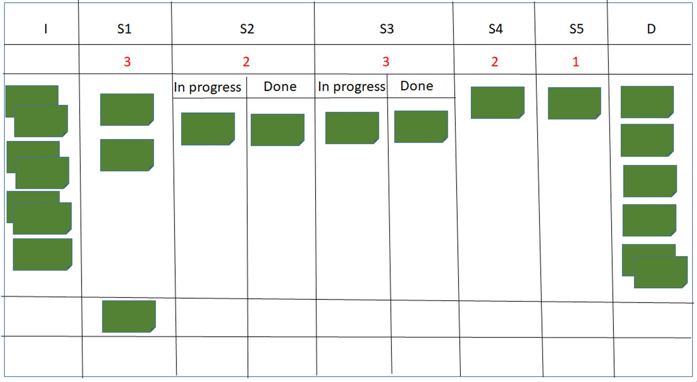
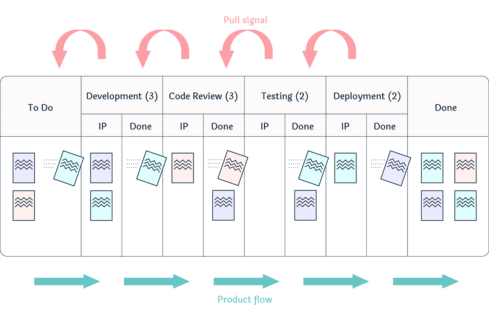
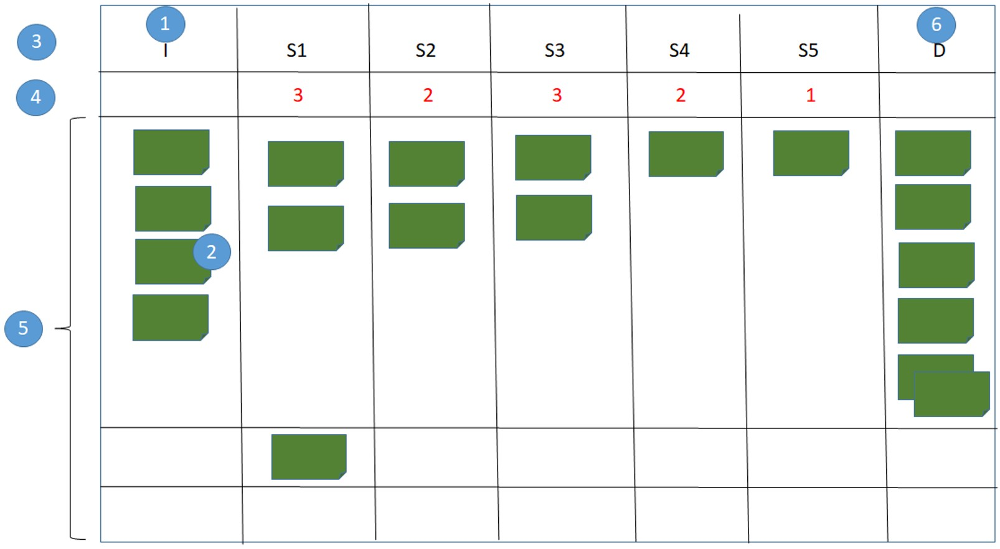
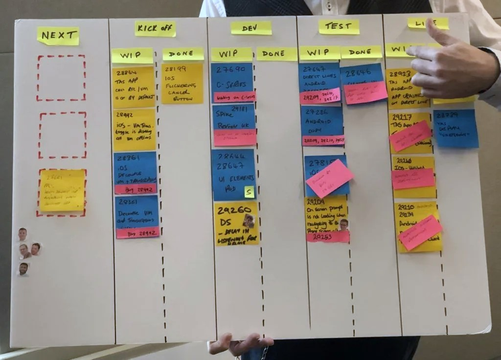
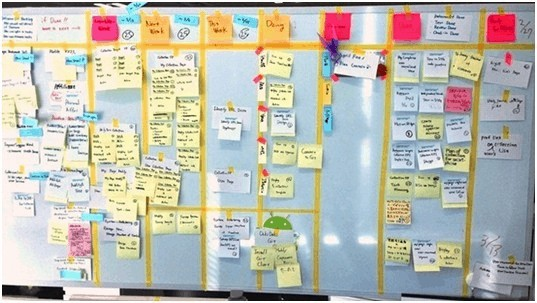
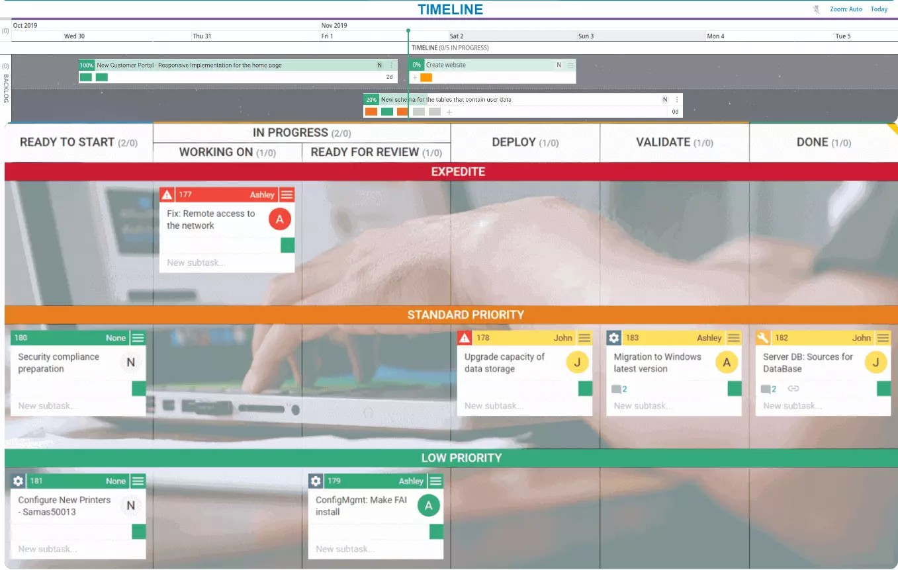
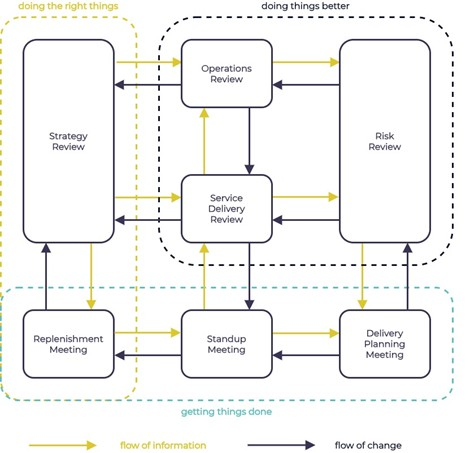
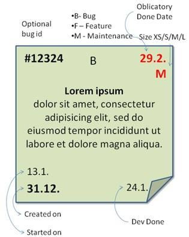
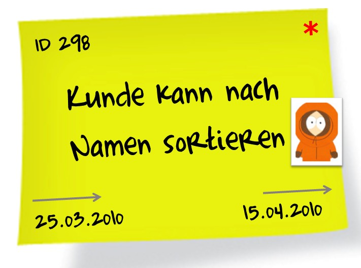
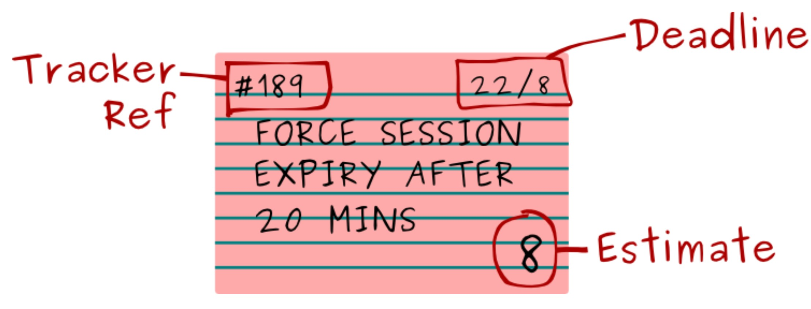

Kanban
Begriffssammlung
Themenbereich
Kanban
Synonyme
Englisch
process step, step, activity
Definition
Bearbeitungsschritte sind aufeinanderfolgende Arbeitseinheiten eines »Kanban-Systems, die den Gesamtprozess unterteilen und jeweils als Einheit verwaltet werden.
Erläuterung
Bearbeitungsschritte werden auf »Kanban-Boards durch jeweils eine Spalte visualisiert.
Bearbeitungsschritte werden nicht weiter unterteilt. Bei Bedarf können Bearbeitungsschritte verfeinert, zusammengefasst bzw. umstrukturiert werden.
»Kanban-Tickets in einem Bearbeitungsschritt können Statusinformationen enthalten, z. B. "In Arbeit”, "Fertig”, ggf. visualisiert durch Unterspalten.
Jedem Bearbeitungsschritt ist direkt oder indirekt ein »WIP-Limit zugeordnet.
Jeder abgeschlossene Bearbeitungsschritt signalisiert, dass das »Work-Item nicht nur seiner Fertigstellung näher gekommen ist, sondern auch, dass die Unsicherheit über das zu erbringende Ergebnis abgenommen hat.
Beispiele
-
Begriffssammlung
Themenbereich
Kanban
Synonyme
-
Englisch
blocker
Definition
Eine Ursache oder Randbedingung, die ein weiteres Arbeiten an einem »Work-Item verhindert, d. h. dieses »blockiert.
Erläuterung
Ein nicht behebbarer Blocker verhindert die Weiterarbeit am betroffenen »Work-Item.
Ein »Work-Item, das von einem behebbaren Blocker betroffen ist, wird auf dem »Kanban-Board sichtbar gekennzeichnet.
Auch die Visualisierung des Zustands »blockiert eines »Work-Items auf einem »Kanban-Board wird oft als Blocker bezeichnet.
In »Kanban-Kadenzen sollen Blocker analysiert und Maßnahmen ergriffen werden, deren Auftreten bzw. Auswirkungen zu minimieren, mit dem Ziel, den »Flow wiederherzustellen.
Beispiele
Arbeitsüberlastung wegen zu hohem »WIP-Limit
Warten auf Gesetzesänderung
Zu behebende Unzulänglichkeit (z.B. Fehler)
Fehlende Zulieferung
Begriffssammlung
Themenbereich
Kanban
Synonyme
geblockt
Englisch
blocked
Definition
Ein »Work-Item ist im Zustand blockiert, wenn ein »Blocker vorliegt, der eine Weiterarbeit an diesem »Work-Item verhindert.
Erläuterung
Der Zustand "blockiert” eines »Work-Items wird meist dadurch visualisiert, dass auf das zugehörige »Kanban-Ticket üblicherweise eine (rote) Markierung angebracht wird.
Oft werden hierzu Klebepunkte, Magnete usw. verwendet.
Daten über den Zustand "blockiert", z. B. Ursache, Start- und Beendigungs-Zeitpunkt, werden oft dokumentiert und später analysiert.
Der Umgang mit blockierten »Work-Items ist aus »WIP-Limit-Sicht schwierig:
- Wenn diese als »WIP mitgezählt werden, kann das zu einer signifikanten Reduzierung der Ressourcenauslastung führen und die Suche nach einer Behebung des »Blockers fördern.
- Wenn diese nicht mitgezählt werden, kann das dazu führen, dass blockierte »Work-Items "zur Seite geschoben" werden und somit die Gesamtleistung des »Kanban-Systems reduziert wird.
Die Anzahl blockierter »Work-Items zu einem bestimmten Zeitpunkt kann als ein Indikator für die Angemessenheit eines »Flows benutzt werden.
Beispiele
-
Begriffssammlung
Themenbereich
Kanban
Synonyme
Engpass, Flaschenhals
Englisch
bottleneck
Definition
Ein Bottleneck ist ein »Bearbeitungsschritt, für den im zeitlichen Mittel mehr »Work-Items zur Bearbeitung anstehen, als bearbeitet werden können.
Erläuterung
Ein Bottleneck ist eine durchsatzbegrenzende Stelle eines »Flows.
Das Erkennen und Beheben von Bottlenecks ist für die »Weiterentwicklung eines »Kanban-Systems wichtig.
»Buffer, »WIPs und »WIP-Limits unterstützen die nicht immer einfache Erkennung von Bottlenecks.
Das Beheben von Bottlenecks in einem »Kanban-System ist immer im Kontext des Gesamtziels des »Kanban-Systems zu betrachten, d. h. es geht darum, den gewünschten Durchsatz mit hoher »Effizienz zu erreichen.
Bottlenecks werden meist durch eine Veränderung des »Kanban-Systems strukturell angegangen, während ein »Blocker durch die Behebung der konkreten Blockade beseitigt wird.
Mögliche Veränderungen zur Behebung von Bottlenecks sind Änderung von »WIP-Limits, Anpassung von Kapazitäten, Umstrukturierung von »Bearbeitungsschritten, Änderung der Arbeits-Regeln und -Vereinbarungen usw.
Ein eingespieltes »Kanban-System hat außer dem ersten »Bearbeitungsschritt weder weitere Bottlenecks noch Leerläufe..
Beispiele
Nicht ausreichende Bearbeitungskapazität
Fehlendes Wissen bzw. fehlende Fähigkeiten
Suboptimal aufgesetzte »Bearbeitungsschritte
Unpassende »WIP-Limits
Begriffssammlung
Themenbereich
Kanban
Synonyme
Puffer
Englisch
buffer
Definition
Ein Buffer ist ein zu einem »Bearbeitungsschritt gehörender Zwischenspeicher, in dem ein »Work-Item (passiv) gelagert wird, das im »Bearbeitungsschritt fertig bearbeitet wurde, aber für den folgenden noch nicht gezogen (»Pull-Prinzip) wurde.
Erläuterung
Buffer werden verwendet, um unvorhergesehene Schwankungen in der Dauer von »Bearbeitungsschritten abzufedern und mit Unregelmäßigkeiten im »Flow umzugehen.
Beispiele für unvorhergesehene Schwankungen sind:
- Ein »Work-Item wurde im »Bearbeitungsschritt schneller fertig als erwartet
- Ein folgender »Bearbeitungsschritt hat keine Kapazitäten frei
Füllstände von Buffern können dazu benutzt werden, Unzulänglichkeiten im »Flow zu erkennen und damit deren Behebung zu ermöglichen:
1. Weitgehend leere Buffer sind Kennzeichen eines effizienten »Kanban-Systems.
2. Überwiegend leere Buffer können aber auch darauf hindeuten, dass entweder die Kapazität des vorhergehenden »Bearbeitungsschritts (repräsentiert durch dessen »WIP-Limit) zu klein ist, oder die des folgenden »Bearbeitungsschritts zu groß ist.
3. Überwiegend hohe Füllstände von Buffern deuten darauf hin, dass die Kapazität des »Bearbeitungsschritts zu groß ist, oder die des folgenden »Bearbeitungsschritts zu klein ist.
Eine Aufnahme eines »Work-Items in einen Buffer erhöht dessen Durchlaufzeit.
Buffer werden auf »Kanban-Boards auch als nachgelagerte (Teil-) Spalte eines »Bearbeitungsschritts visualisiert.
Als Überschrift einer Buffer-Spalte wird oft "Done" oder "Ready for …” verwendet.
Beispiele
Beispiel 1:

Beispiel 2 [Si17]:

Begriffssammlung
Themenbereich
Kanban
Synonyme
-
Englisch
expedite
Definition
Expedite ist die Bezeichnung für eine »Serviceklasse, deren Regeln besagen, dass ein »Work-Item in dieser Serviceklasse die Bearbeitung von »Work-Items anderer »Serviceklassen im jeweiligen »Bearbeitungsschritt unterbrechen kann, um dieses priorisiert zu bearbeiten.
Erläuterung
Ein »Work-Item in der »Serviceklasse Expedite erhält höchste Aufmerksamkeit, weil eine Nicht-Bearbeitung kritisch wäre.
Es kann geschehen, dass durch Expedite-»Work-Items die Kapazität für »Bearbeitungsschritte und damit das »WIP-Limit vorübergehend überschritten wird. Alternativ werden Expedite-»Work-Items beim »WIP-Limit nicht mitgezählt.
Expedite-»Work-Items sind nicht immer vermeidbar, haben aber den negativen Effekt, dass diese den »Flow schädigen.
Beispiele
Ereignisse, deren Auswirkungen zu einem Expedite-»Work-Item führen können:
- Falsch eingeschätztes »Work-Item
- Angriff durch einen Hacker
- Kritischer Systemfehler
- Ausfall eines Servers
- Absturz einer Anwendung
- Notfälle
- Gefahr der Nichteinhaltung gesetzlicher oder regulatorischer Vorgaben
Begriffssammlung
Themenbereich
Kanban
Synonyme
-
Englisch
fast lane
Definition
Eine Fast-Lane ist eine »Serviceklasse, deren Regeln eine bevorzugte Behandlung beim »Ziehen von »Work-Items vorgeben.
Erläuterung
»Work-Items, die der »Serviceklasse Fast-Lane zugeordnet sind, werden auf dem »Kanban-Board durch »Kanban-Tickets in eigenen »Swimlanes visualisiert.
Bevorzugte Behandlung bewirkt, dass ein Bearbeiter beim »Ziehen zuerst in der zugehörigen »Swimlane der »Serviceklasse Fast-Lane nachschaut und ein dort bereitstehendes »Kanban-Ticket zieht, bevor ein Ticket aus der Standard-Swimlane gezogen wird. Das »WIP-Limit wird beachtet.
Ziel eines »Kanban-Systems sollte sein, alle »Work-Items in der »Serviceklasse Standard abzuarbeiten.
Eine häufige Nutzung von Fast-Lanes kann ein Indiz für Verbesserungsmöglichkeiten im »Flow sein.
Beispiele
-
Begriffssammlung
Themenbereich
Kanban
Synonyme
Arbeitsfluss, Fluss
Englisch
flow
Definition
Der Flow ist die aktuelle Art und Weise, wie in einem »Kanban-System die »Work-Items in der Gesamtheit der »Bearbeitungsschritte von allen Beteiligten bearbeitet und durchgeschleust werden.
Erläuterung
Ein Ziel des Einsatzes von »Kanban ist es, einen aus Sicht eines »Work-Items möglichst ununterbrochen Arbeitsfluss ("Flow”) durch alle »Bearbeitungsschritte hindurch herzustellen und aufrechtzuerhalten.
Ein Flow in einem »Kanban-System ist dann »effizient, wenn die »Work-Items in den jeweiligen »Bearbeitungsschritten ohne unvermeidliche Verzögerungen oder Wartezeiten direkt hintereinander bearbeitet werden.
Ein effizienter Flow ermöglicht es, Aufgaben schneller abzuschließen und Anforderungen schneller zu erfüllen.
Beispiele
-
Begriffssammlung
Themenbereich
Kanban
Synonyme
Flusseffizienz
Englisch
flow efficiency
Definition
Die Flow-Efficiency ist die aus Bearbeitungszeit und Durchlaufzeit abgeleitete Messgröße zur quantitativen Bewertung eines »Flows.
Erläuterung
Flow-Efficiency wird meist als Bearbeitungszeit / Durchlaufzeit gemessen und oft in Prozent angegeben.
Die Bearbeitungszeit ist die aktive Arbeitszeit an einem »Work-Item. Die Durchlaufzeit umfasst zusätzlich Warte- und Liegezeiten des »Work-Items.
Sowohl die Bearbeitungszeit als auch die Durchlaufzeit sind schwierige Messgrößen, da bei deren Erfassung viele Aspekte beachtet werden müssen, z. B. ein Verbot der unmittelbaren Erfassung von Arbeitszeiten oder die Berücksichtigung von Überstunden und Nicht-Arbeitszeiten wie Wochenenden und Feiertagen.
Diese Aspekte erschweren einen Vergleich der Flow-Efficiencys verschiedener »Kanban-Systeme.
Die Flow-Efficiency eines »Kanban-Systems oder eines Teils eines »Kanban-Systems wird unter Verwendung statistischer Berechnungsmethoden aus den Werten der Bearbeitungszeit und Durchlaufzeit der einzelnen »Work-Items berechnet.
Die Flow-Efficiency wird häufig als einer von mehreren Indikatoren zur Optimierung des gesamten Arbeitsablaufs (»Flow) eines »Kanban-Systems genutzt.
Beispiele
-
Begriffssammlung
Themenbereich
Kanban
Synonyme
-
Englisch
input queue
Definition
Die Input-Queue eines »Kanban-Boards enthält die »Work-Items, die im ersten »Bearbeitungsschritt des »Kanban-Systems bearbeitet werden können.
Erläuterung
Die »WIP-limitierte Input-Queue ist der »Buffer vor dem System, der sicherstellt, dass »Pull-Anfragen aus dem »Kanban-System bedient werden können.
In »Replenishment-Meetings werden die »Work–Items identifiziert, die in die Input-Queue aufgenommen werden.
Auf »Kanban-Boards wird als Überschrift der Visualisierung der Input-Queue auch "Ready to Start", "Beauftragt" o. ä. verwendet.
Beispiele
-
Begriffssammlung
Themenbereich
Kanban
Synonyme
Kanban-Methode, Kanban für die Wissensarbeit, Software-Kanban, SW-Kanban, Kanban für IT, Wissens-Kanban
Englisch
Kanban
Definition
Kanban ist im Kontext der Wissensarbeit ein Ansatz zur Koordination von Aufgaben und zur Weiterentwicklung der Arbeitsabläufe unter Verwendung quantitativer und statistischer Methoden und Verfahren.
Erläuterung
Kanban, so wie hier definiert, basiert auf Ideen der Kanban- und Lean-Vorgehensweisen in Fertigungen (vor allem Toyota), der kontinuierlichen Verbesserung nach japanischer Art (Kaizen), der Warteschlangentheorie und der Theory of Constraints.
Kanban wurde von David J. Anderson 2010 im Buch Kanban: Successful Evolutionary Change for Your Technology Business [An10] erstmals in Gesamtheit vorgestellt.
2019 wurde das Kanban Maturity Model [AnBo21] vorgestellt.
Durch die Nutzung von Kanban in einem »Kanban-System werden die »Work-Items in einem durchgängig aktiven Fluss (Arbeitsfluss, »Flow) abgearbeitet und nicht primär in »Iterationen, wie beispielsweise bei »Scrum.
Kanban basiert auf sechs »Prinzipien (je drei zum Change und zur Leistungserbringung) und sechs »Praktiken.
Die Change-»Prinzipien sind:
1. Beginne mit dem, was jetzt getan wird.
2. Führe Einigung darüber herbei, »Verbesserungen durch evolutionäre Veränderungen anzustreben.
3. Ermutige und fördere Verantwortung, Führungsfähigkeit und -qualität sowie Initiativen für Verbesserungen auf allen Ebenen der Organisation.
Die »Prinzipien zur Leistungserbringung sind:
1. Verstehe die Kundenanforderungen und -erwartungen und stelle sie in den Mittelpunkt.
2. Organisiere die Arbeit, nicht die Arbeiter.
3. Entwickle Dienstleistungen und deren Zusammenwirken sowie zugehörige Leitlinien häufig weiter, um die Ergebnisse zu verbessern.
Die »Praktiken sind:
1. Visualisiere die Arbeit und den Fluss der Arbeit (»Flow).
2. Begrenze die Menge an begonnener Arbeit (Work in Progress, »WIP).
3. Steuere den »Flow.
4. Mache Regeln explizit.
5. Verwende Feedbackschleifen.
6. »Verbessere gemeinsam, nutze Experimente zur Weiterentwicklung.
Ein weiterer wesentlicher Aspekt von Kanban ist das »Pull-Prinzip.
Kanban wird in Bereichen eingesetzt wie Marketing, IT-Betrieb, Projektmanagement, Softwareentwicklung, Serviceerbringung usw.
Es gibt anhaltende Diskussionen darüber, ob Kanban zu den »agilen Methoden gezählt werden kann oder nicht.
Der Begriff “Kanban”, (japanisch: 看板, 看: “anschauen”, 板: “Tafel”, カンバン: Signalkarten) wurde vermutlich erstmals im 17. Jahrhundert (christlicher Zeitrechnung) in Japan verwendet, um in Form eines Aufstellschilds auf den Verkauf alkoholhaltiger Getränke in Hinterhöfen hinzuweisen.
Beispiele
-
Begriffssammlung
Themenbereich
Kanban
Synonyme
-
Englisch
Kanban board
Definition
Ein Kanban-Board ist eine strukturierte Darstellung des aktuellen Arbeitsstands des Teams und der steuernden Daten des »Kanban-Systems.
Erläuterung
Ein Kanban-Board ist primär in Spalten strukturiert, welche die zu erbringenden »Bearbeitungsschritte gemäß ihrem Soll-Ablauf anordnen.
Sekundär wird in Zeilen (»Swimlanes) die Arbeit an »Work-Items auf Basis jeweils zugeordneter »Serviceklassen und eventuell weiterer Aspekte strukturiert und visualisiert.
Die aktuell durchgeführten Arbeiten (»Work-Items) sind auf »Kanban-Tickets in den Spalten und Zeilen des Kanban-Boards einsortiert.
Damit ergibt sich dieser prototypische Aufbau (mit beispielhafter Beschriftung):

»Input-Queue (mit der Bedeutung: Bereit zur Bearbeitung)
»Kanban-Tickets
»Bearbeitungsschritte, ggf. inklusive »Buffer
Beispiele könnten sein: S 1: Analyse, S 2: Design, S 3: Entwicklung, S 4: Test, S 5: Integration
»WIP-Limits
»Swimlanes
Done (mit der Bedeutung: Bereit zur Auslieferung)
Kanban-Boards sind oft physische Tafeln auf denen »Kanban-Tickets angebracht werden; es werden aber auch softwaregestützte Kanban-Boards verwendet.
In einem »Kanban-System werden Kanban-Boards als Mittel zur Koordination, Planung und Verfolgung der Arbeiten verwendet; ein Kanban-Board erzeugt durch Struktur und Nutzung eine hohe Transparenz über Aufgaben und Fortschritte.
Je nach Zweck, Notwendigkeit oder Einsatzgebiet unterscheiden sich Struktur und Inhalt von Kanban-Boards beträchtlich.
Beispiele
Beispiel 1 [Ca20]:

Beispiel 2 [BmXXa]:

Beispiel 3 (und weitere Beispiele) [BmXXb]:

Begriffssammlung
Themenbereich
Kanban
Synonyme
-
Englisch
kanban cadence
Definition
Eine Kanban-Kadenz ist eines der regelmäßigen Meetings, die für ein »Kanban-System empfohlen werden.
Erläuterung
Die sieben oft genannten Typen von Meetings sind:
1. Delivery Planning Meeting (oft pro Auslieferung):
Durchsprache der fertiggestellten »Work-Items und Entscheidungen über deren weitere Verwendung
2. »Operations-Review (oft monatlich)
3. »Replenishment-Meeting (oft wöchentlich bzw. bei Bedarf)
4. Risk Review (oft monatlich):
Frühzeitige Identifikation und Handhabung von Risiken und »Bottlenecks
5. Service Delivery Review (oft wöchentlich):
Vergleich gelieferter Ergebnisse mit Erwartungen der Stakeholder
6. »Standup-Meeting (oft täglich)
7. Strategy Review (oft vierteljährlich):
Abgleich und Anpassung der übergeordneten Strategie mit Fähigkeiten, Geschäftszielen und verfügbaren Ressourcen, basierend auf Kundenrückmeldungen, der Marktsituation und der Leistungsfähigkeit auch anderer Kanban-Systeme.
Deren Zusammenwirken kann grafisch so dargestellt werden (Quelle: Persönliche Kommunikation):

Kanban-Kadenzen sind wichtige Bestandteile zur Steuerung und zur »Kontinuierlichen Verbesserung von »Kanban-Systemen.
Die Kanban-Kadenzen wurden 2015 von David Anderson in einem Blog-Post erklärt.
Beispiele
-
Begriffssammlung
Themenbereich
Kanban
Synonyme
-
Englisch
Kanban system
Definition
Ein Kanban-System besteht aus einer Gesamtheit von explizit vereinbarten operativen Mechanismen zur Koordination der Abarbeitung von »Work-Items. Es basiert auf den sechs »Praktiken von »Kanban.
Erläuterung
Ziel der Nutzung eines Kanban-Systems ist es, einen beständigen und ununterbrochenen »Arbeitsfluss durch alle »Bearbeitungsschritte zu gewährleisten, indem der reale Ablauf modelliert wird.
Ziel dieser Modellierung ist es, einen ununterbrochenen »Fluss der Arbeit und von Ergebnissen, sowie eine gute Gesamtleistung zu ermöglichen.
Die Nutzung wird gesteuert durch »Kanban-Kadenzen und Arbeitsabsprachen.
Die beteiligten »Bearbeitungsschritte, Personen, Ressourcen, Arbeitsgegenstände (»Work-Items) und »WIP-Limits werden auf »Kanban-Boards dokumentiert.
Das Kanban-System legt den generellen Ablauf folgendermaßen fest:
- Neue »Work-Items werden in die »Input-Queue eingefügt.
- Sobald im ersten »Bearbeitungsschritt Bearbeitungskapazität frei wird, d. h. die Gesamtzahl der im »Bearbeitungsschritt bearbeiteten »Work-Items unter das »WIP-Limit fällt, wird eines der »Work-Items von einem Bearbeiter aus der »Input-Queue gezogen (»Pull-Prinzip) und die Bearbeitung begonnen.
- In einem »Bearbeitungsschritt fertig gestellte »Work-Items werden für den nächsten »Bearbeitungsschritt bereitgestellt.
- Nachfolgende »Bearbeitungsschritte gehen analog vor, mit der Ausnahme des letzten, bei dem fertige »Work-Items mit Done gekennzeichnet werden.
Typischerweise kommen die Bearbeiter einmal täglich zusammen (»Daily-Meeting), um sich über den Stand der Arbeiten anhand des »Kanban-Boards auszutauschen.
Die Fähigkeit des Kanban-Systems, einen ununterbrochenen »Fluss von Ergebnissen zu liefern, wird immer wieder geprüft.
Typische Gegenstände der Prüfung sind Überlast, Unterlast, Warteschlangen, Unregelmäßigkeiten im »Fluss, Transaktionskosten für Übergaben und Freigaben, bzw. »Bottlenecks.
Um die bestgeeignetsten Veränderungen zu ermitteln, können relevante Ist-Werte erfasst, Experimente und Simulationen vorgeschlagen und durchgeführt, sowie quantitative und statistische Methoden genutzt werden.
Im Kanban-System ist die Festlegung der »Bearbeitungsschritte und deren Granularität entscheidend: Wird zu grob aufgeteilt, leidet die Übersicht und die Verfolgbarkeit, bei zu feiner Aufteilung erfordert die Pflege des Kanban-Systems zu hohen Aufwand.
Beispiele
-
Begriffssammlung
Themenbereich
Kanban
Synonyme
Karte, Card, Ticket
Englisch
card, Kanban ticket, ticket
Definition
Ein Kanban-Ticket ist eine visuelle Repräsentation eines »Work–Items auf einem »Kanban-Board.
Erläuterung
Auf physischen »Kanban-Boards können Kanban-Tickets magnetisch oder mit Nadeln befestigte Karten, Klebezettel, usw. sein.
Kanban-Tickets können auch in Software-Tools abgelegt werden.
Ein Kanban-Ticket wird gemäß dem »Pull-Prinzip in den nächsten »Bearbeitungsschritt des »Kanban-Systems „gezogen“.
Eine eindeutige Beschriftung eines Kanban-Tickets, die auch den Bezug zum »Work-Item herstellt, hat sich in der Praxis bewährt.
Kanban-Tickets können mit weiteren Angaben - auch temporär - ergänzt werden, z. B. »blockiert, festes Enddatum, Zeitpunkt des Bearbeitungsbeginns, usw.
Durch geeignete Einfärbung oder anderweitige Kennzeichnung der Kanban-Tickets können auf einem »Kanban-Board weitere von den Anwendern frei wählbare Dimensionen visualisiert werden, z. B. Zugehörigkeit zu einem (Teil-) Produkt.
Beispiele
Beispiel 1:

Beispiel 2 [Ro10]:

Beispiel 3 [Po15]:

Begriffssammlung
Themenbereich
Kanban
Synonyme
-
Englisch
continuous improvement
Definition
Die kontinuierliche Verbesserung eines »Kanban-Systems ist die ständige und systematische Analyse der Eignung und Angemessenheit des »Kanban-Systems samt der inkrementellen, fortlaufenden Weiterentwicklung der Abläufe, der Organisation und des Teams.
Erläuterung
Kontinuierliche Verbesserung ist eine der Grundideen von »Kanban; sie ist eine Adaption der allgemeinen Idee eines kontinuierlichen Verbesserungsprozesses.
In einem »Kanban-System wird von den Mitwirkenden laufend die Adäquatheit und Leistungsfähigkeit des »Kanban-Systems, die erreichte Qualität der Ergebnisse, der Durchsatz, die Durchlaufzeit, die Wartezeiten und weiteres beobachtet und gemessen.
Auf Basis dieser Messungen und von Experimenten werden die Parameter des »Kanban-Systems, u. a. »Bearbeitungsschritte, »WIP-Limits und »Serviceklassen vom Team im Rahmen der Selbstorganisation so angepasst, dass die aktuell bestmögliche Leistungsfähigkeit (z. B. »Flow-Efficiency, Durchlaufzeit, Ressourcenauslastung, usw.) erreicht wird (»Kanban-Kadenzen).
Zur Identifikation von Verbesserungsmöglichkeiten können folgende Aspekte betrachtet werden:
- Wartezeiten zwischen »Bearbeitungsschritten
- »Engpässe
- Ressourcenauslastung
- »Blocker
- Arbeitsunterbrechungen mit und ohne Kontextwechsel
- Nacharbeiten
- »Flow-Efficiency
- »Work-Items, die andere »Work-Items ungeplant überholen
- Feedback von Kunden
- …
Kontinuierliche Verbesserung im Sinne von »Kanban übernimmt etliche Vorgehensweisen und Ideen aus
- dem japanischen Kaizen,
- der Theory of Constraints,
- der Queueing-Theory,
- dem Toyota Production System und
- dem Product Management Flow.
Beispiele
- Anpassung von »WIP-Limits
- Änderung von Regeln zur Zusammenarbeit
Begriffssammlung
Themenbereich
Kanban
Synonyme
-
Englisch
operations review
Definition
Ein Operations-Review ist ein regelmäßiges Feedback-Treffen der Stakeholder von »Kanban-Systemen, in dem in kurzer Zeit Fortschritte, Stand und Probleme datenbasiert dargestellt werden, sowie weitere, insbesondere systemische Verbesserungen angestoßen werden.
Erläuterung
Die Stakeholder stellen ihren Stand und die Fortschritte seit dem letzten Operations-Review mit einer kurzen Präsentation der erfassten, standardisierten Messwerte der »Kanban-Systeme objektiv dar.
Aus den Daten werden aus gesamtheitlicher Sicht Fortschritte und Probleme abgeleitet und deren Relevanz mit Blick auf die Ziele bewertet.
Zweck von Operations-Reviews ist es, »Bottlenecks, Störungen und sonstige Probleme in »Kanban-Systemen sowie gegebenenfalls in deren Zusammenwirken zu identifizieren und deren Beseitigung anzustoßen.
Ein Operations-Review soll unter Mitwirkung aller beteiligter Teams, Organisationseinheiten, operativer und strategischer Manager und gegebenenfalls Externer, wie z. B. Kunden, durchgeführt werden.
Ein Operations-Review ist ein wesentlicher Bestandteil der »kontinuierlichen Verbesserung von »Kanban. Es ist ein Treffen im Rahmen der »Kanban-Kadenzen.
Ein Operations-Review gibt allen Stakeholdern Einsicht in Arbeitsweisen, Randbedingungen und Abhängigkeiten der anderen Stakeholder.
Operations-Reviews sollten nicht länger als zwei Stunden dauern und finden typischerweise einmal im Monat statt.
Beispiele
Erfasste und ausgewertete Daten sind z. B.
- Lead-Time
- Cycle-Time
- Durchsatz
- »Flow-Efficiency
Begriffssammlung
Themenbereich
Kanban
Synonyme
-
Englisch
pull principle
Definition
Das Pull-Prinzip besagt, dass mit der Bearbeitung eines »Work–Items in einem »Bearbeitungsschritt begonnen werden kann, wenn das »WIP-Limit für diesen »Bearbeitungsschritt unterschritten ist und das »Work–Item für den »Bearbeitungsschritt bereit ist.
Erläuterung
Das Pull-Prinzip führt zu einem aktiven „Ziehen“ von »Work–Items durch die Bearbeiter. Visualisiert wird dies durch das „Ziehen“ des zugehörigen »Kanban-Tickets auf dem »Kanban-Board in den nächsten »Bearbeitungsschritt.
Die Steuerung der Arbeit an »Work–Items durch Pull-Prinzip und »WIP-Limit vermeidet Stress, die dadurch entstehende Gefährdung der Qualität und verringert organisatorischen Overhead.
Beispiele
-
Begriffssammlung
Themenbereich
Kanban
Synonyme
Priorisierungs-Workshop, Replenishment, Queue-Replenishment
Englisch
replenishment meeting
Definition
Ein Replenishment-Meeting ist ein Workshop zum Auffüllen der »Input-Queue.
Erläuterung
Enthält die »Input-Queue weniger »Work–Items als das dazugehörige »WIP-Limit angibt, können im Replenishment-Meeting weitere »Work–Items in die »Input-Queue aufgenommen werden.
Ziel des Replenishment-Meeting ist es, die aus Gesamtsicht sinnvollsten »Work–Items auszuwählen.
In Replenishment-Meetings werden keine »Work–Items aufbereitet. Dies geschieht entweder davor oder danach, z. B. in den ersten »Bearbeitungsschritten.
Replenishment-Meetings können in regelmäßigen Abständen oder nach Bedarf stattfinden.
Replenishment-Meetings sind Treffen im Rahmen der »Kanban-Kadenzen.
Beispiele
-
Begriffssammlung
Themenbereich
Kanban
Synonyme
-
Englisch
classes of service
Definition
Eine Serviceklasse legt durch Regeln und Kriterien die Handhabung von zugeordneten »Work-Items fest, insbesondere deren Bearbeitungspriorität.
Erläuterung
Oft verwendete Serviceklassen sind
- Standard
- »Fast-Lane
- »Expedite („Überholspur“)
- Fester Termin
- Intangible
In »Kanban-Systemen werden gelegentlich weitere Serviceklassen definiert, auch zur Unterstützung der Erreichung von Geschäftszielen.
Der Umgang mit »Work-Items in einer »Swimlane auf einem »Kanban-Board wird durch die Serviceklasse bestimmt, die dieser »Swimlane zugeordnet ist.
Die Regeln einer Serviceklasse leiten den Bearbeiter beim »Ziehen des nächsten von ihm zu bearbeitenden »Kanban-Tickets innerhalb der »Swimlane und über alle »Swimlanes hinweg.
Beispiel für eine Regel:
- Wenn ein »Kanban-Ticket, das vom Bearbeiter bearbeitet werden kann, in einer »Swimlane mit Serviceklasse »Expedite vorliegt, so ist dieses unmittelbar zu ziehen, selbst wenn die Bearbeitung eines anderen »Kanban-Tickets unterbrochen werden muss.
Die Kriterien der Serviceklassen unterstützen die Entscheidungsfindung bei der Zuordnung von »Work-Items zu Serviceklassen.
Beispiele für Kriterien:
- Fertigstellung unkritisch -> Standard
- Sollte zuerst fertig werden -> Fast-Lane
- Bevorzugter Kunde -> Fast-Lane
- Muss zuerst fertig werden -> Expedite
- Gesetzlich feststehender Termin -> Fester Termin
- Technische Schulden -> Intangible
Beispiele
-
Begriffssammlung
Themenbereich
Kanban
Synonyme
Lane
Englisch
swimlane
Definition
Eine Swimlane ist eine abgegrenzte Zeile auf einem »Kanban-Board, die eine »Serviceklasse visualisiert und zusätzlich dazu verwendet werden kann, »Kanban-Tickets für eine bestimmte Art von Arbeit, für ein Team oder für einen anderen Zweck abgegrenzt zu visualisieren.
Erläuterung
»Kanban-Boards enthalten mindestens eine Swimlane der »Serviceklasse Standard.
Bei Bedarf können »Serviceklassen durch mehrere Swimlanes für unterschiedliche Zwecke visualisiert werden, z. B. für Teilprodukte, Kunden, usw.
»Kanban-Tickets werden bei begründetem Bedarf von einer Swimlane in eine andere verschoben.
Innerhalb einer Swimlane wird der Stand der Abarbeitung eines »Work–Items durch die jeweilige Positionierung des zugehörigen »Kanban-Tickets visualisiert.
Beispiele
Siehe »Kanban-Board
Begriffssammlung
Themenbereich
Kanban
Synonyme
Work-in-Progress, Work-in-Process
Englisch
WIP, work in progress, work in process
Definition
WIP ist eine Messgröße für die Anzahl der »Work-Items, die zu einem Zeitpunkt in einem Teilbereich eines »Kanban-Boards bearbeitet werden.
Erläuterung
Teilbereiche eines Kanban-Boards können z. B. einzelne »Bearbeitungsschritte, »Swimlanes, Kombinationen davon, bis hin zum gesamten »Kanban-Board sein.
Die Erfassung von WIPs ist Voraussetzung für die Nutzung von »WIP-Limits.
Nicht aktive »Work-Items, z. B. die in »Buffern oder im Zustand »blockiert, werden in einigen »Kanban-Implementierungen separat gemessen. Andere »Kanban-Implementierungen messen diese zusammen mit den aktiven »Work-Items, mit dem Risiko, dass eine Verschlechterung des »Flows nicht frühzeitig erkannt wird.
Üblicherweise werden alle »Work-Items in einem »Bearbeitungsschritt zusammengezählt. Sofern mehrere »Serviceklassen in einem »Kanban-System vorhanden sind, kann es sinnvoll sein, die »Work-Items pro »Serviceklasse und »Bearbeitungsschritt zu zählen.
Eine WIP-Erfassung kann über mehrere »Bearbeitungsschritte bis hin zu allen gemeinsam erfolgen.
»Work-Items werden auf einem »Kanban-Board durch »Kanban-Tickets visualisiert. Damit ist das WIP eines »Bearbeitungsschritts auf einem stringent geführten »Kanban-Board die Anzahl der »Kanban-Tickets in diesem »Bearbeitungsschritt.
Beispiele
-
Begriffssammlung
Themenbereich
Kanban
Synonyme
Work-in-Progress-Limit, Work-in-Process-Limit, WIP-Target
Englisch
WIP limit, WIP target
Definition
Ein WIP-Limit repräsentiert die zu einem Zeitpunkt zur Verfügung gestellte Bearbeitungskapazität für einen Teilbereich eines »Kanban-Boards.
Erläuterung
WIP-Limits sind wesentliche Steuerungselemente für »Kanban-Systeme und damit eine Voraussetzung für einen optimalen »Flow.
Die Gesamtheit der WIP-Limits eines »Kanban-Systems repräsentiert die Verteilung der Bearbeitungskapazität mit der ein optimaler »Arbeitsfluss erwartet wird.
WIP-Limits werden im Rahmen der »kontinuierlichen Verbesserung bei Bedarf angepasst.
WIP-Limits werden oft für »Bearbeitungsschritte festgelegt, können aber auch für einen »Bearbeitungsschritt in einer »Serviceklasse, für mehrere »Bearbeitungsschritte gemeinsam, für ein ganzes »Kanban-Board, usw. festgelegt werden.
Siehe auch »WIP.
Beispiele
-
Begriffssammlung
Themenbereich
Kanban
Synonyme
-
Englisch
work item
Definition
Ein Work-Item ist die Festlegung eines konkreten Resultats, das mit dem jeweiligen »Kanban-System zu erstellen ist.
Erläuterung
Work-Items und deren Status werden auf »Kanban-Boards durch »Kanban-Tickets visualisiert.
Work-Items werden in Arbeitsabsprachen, z. B. im Rahmen der »Kanban-Kadenzen erstellt, festgelegt und einer »Serviceklasse zugewiesen.
Beispiele
-